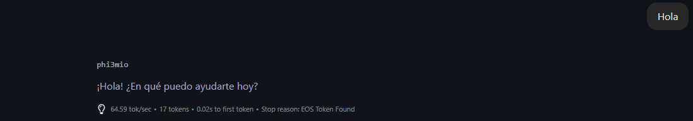
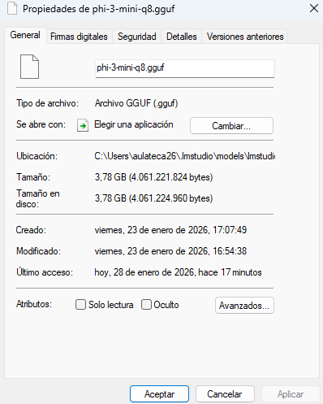
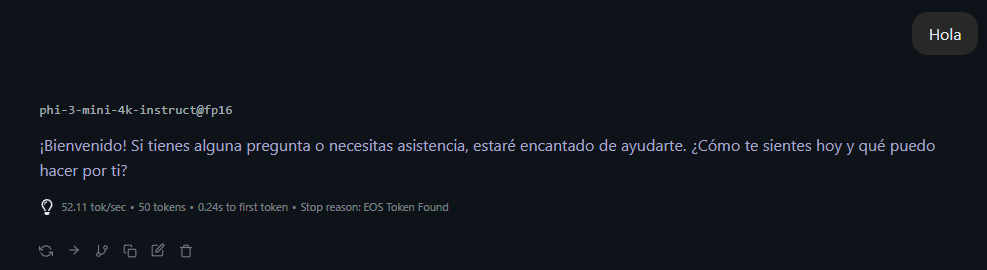
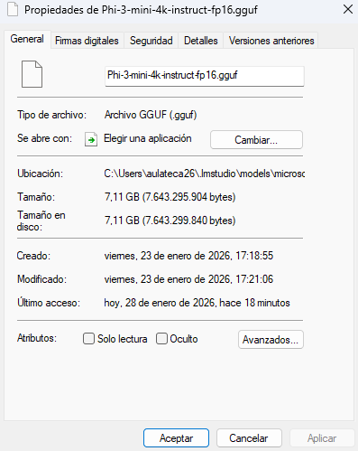

Documento de la práctica en Windows (PowerShell) donde se parte de un modelo en alta precisión, se convierte a formato GGUF cuantizado y se comparan velocidad y tamaño entre ambas versiones.
El objetivo de esta práctica es tomar un modelo de lenguaje en formato de alta precisión
(por ejemplo FP16 en Hugging Face) y convertirlo a un único archivo .gguf
cuantizado que pueda ejecutarse de forma fluida en un ordenador de usuario.
Para demostrar el efecto de la cuantización se han medido dos aspectos: el tamaño del archivo del modelo en disco (peso en GB) y la velocidad de generación de texto medida en tokens por segundo antes y después del proceso.
convert_hf_to_gguf.py incluido en llama.cpp [web:5][web:12]..gguf cuantizado listo para usar en LM Studio u otras interfaces compatibles [web:10][web:18].Los comandos se han ejecutado en PowerShell creando primero una carpeta específica para la práctica.
mkdir C:\cuantizacion-ia
cd C:\cuantizacion-ia
py -m venv venv-llm
.\venv-llm\Scripts\Activate.ps1Set-ExecutionPolicy -Scope Process -ExecutionPolicy Bypassllama.cpp y requisitos
A continuación se clona el repositorio de llama.cpp y se instalan las
dependencias de Python necesarias para usar el conversor a GGUF [web:5].
git clone https://github.com/ggerganov/llama.cpp.git
cd .\llama.cpp
pip install -r .\requirements.txt
cd ..
El modelo de partida se descarga desde Hugging Face mediante git clone, lo que
genera una carpeta con varios archivos de pesos (por ejemplo .safetensors) y metadatos.
git lfs install
git clone https://huggingface.co/microsoft/Phi-3-mini-4k-instructEn otros casos se han utilizado modelos que ya se ofrecen en varios niveles de cuantización (FP16, Q8_0, Q4_K_M) como Qwen3-VL-4B-Instruct-GGUF, que publica directamente pesos en formato GGUF listos para su uso [web:11][web:14].
convert_hf_to_gguf.py
La cuantización se realiza ejecutando el script convert_hf_to_gguf.py, que
permite elegir el formato de salida mediante el argumento --outtype (por ejemplo
f16 o q8_0) [web:5][web:12].
python .\llama.cpp\convert_hf_to_gguf.py .\Phi-3-mini-4k-instruct `
--outtype q8_0 `
--outfile phi-3-mini-q8.gguf
En esta práctica se ha utilizado la opción q8_0, que aplica cuantización de 8 bits
y reduce aproximadamente a la mitad la huella de memoria frente a FP16, manteniendo una
calidad muy alta del modelo [web:12].
q4_k_m, por lo que fue necesario adaptar el comando a las opciones
realmente soportadas en la versión instalada.
Una vez finalizado el proceso, en la carpeta de trabajo aparece el archivo
phi-3-mini-q8.gguf. Para comprobar su creación y tamaño se ha utilizado
el comando nativo de PowerShell dir en lugar de ls -lh, que
provocaba un error de parámetros al venir de sintaxis Linux.
dir .\phi-3-mini-q8.ggufis not a directory al indicar
mal la ruta del modelo. La solución consistió en situarse en C:\cuantizacion-ia
y revisar las rutas con dir antes de repetir el comando.


En las capturas de propiedades de archivo se observa cómo el modelo original ocupa
varios gigabytes en formato FP16 o similar, mientras que el archivo .gguf
cuantizado reduce de forma notable el tamaño, lo que facilita almacenarlo y moverlo
entre equipos.
Esta reducción de peso hace posible trabajar con modelos que de otra forma no cabrían en la memoria de un equipo doméstico, especialmente cuando se combinan varios modelos o se guardan diferentes versiones para pruebas.
Las capturas de LM Studio muestran el valor de tokens/s tanto para el modelo sin cuantizar como para el cuantizado, evidenciando una mejora clara en la velocidad de respuesta al utilizar números de menor precisión.
Aunque la cuantización puede introducir una pequeña pérdida de precisión en las respuestas, para el uso práctico en local el equilibrio entre calidad y velocidad resulta muy favorable, especialmente al pasar de un modelo pesado a uno optimizado para CPU o GPU de consumo.


Uno de los primeros problemas fue intentar cuantizar directamente con
--outtype q4_k_m, opción que no estaba disponible en la versión de
convert_hf_to_gguf.py utilizada, generando un error de
invalid choice en consola.
La solución consistió en revisar las opciones realmente permitidas por el script
(como f16 y q8_0) y adaptar la práctica a
q8_0, que sigue ofreciendo una compresión importante y es ampliamente
compatible con herramientas como LM Studio [web:5][web:12].
Otra dificultad recurrente fue el error Phi-3-mini-4k-instruct is not a directory,
causado por ejecutar el script desde la carpeta llama.cpp sin ajustar la
ruta relativa al modelo.
Para solucionarlo fue necesario volver a la carpeta raíz del proyecto,
confirmar la presencia de la carpeta del modelo con dir y
ajustar el comando para que apuntase a la ruta correcta del directorio
que contiene los pesos descargados.
Al principio se utilizaron comandos pensados para Linux, como
ls -lh, que en PowerShell provocan errores de parámetros
al no reconocer la opción -lh.
La práctica permitió afianzar la diferencia entre ambas sintaxis y adoptar
los comandos nativos de PowerShell, como dir y
Get-Item, para inspeccionar archivos y tamaños.
Inicialmente se copió directamente la carpeta completa de Hugging Face dentro
de la carpeta de modelos locales de LM Studio, lo que produjo el error
No ModelFormatName defined for model compatibility type: torchSafetensors.
La causa era que LM Studio espera archivos .gguf, no carpetas
con pesos originales; la solución definitiva fue eliminar esa carpeta y
copiar únicamente el archivo cuantizado .gguf dentro de
.lmstudio\models, tras lo cual el modelo apareció correctamente
en la lista de modelos locales [web:10][web:16].